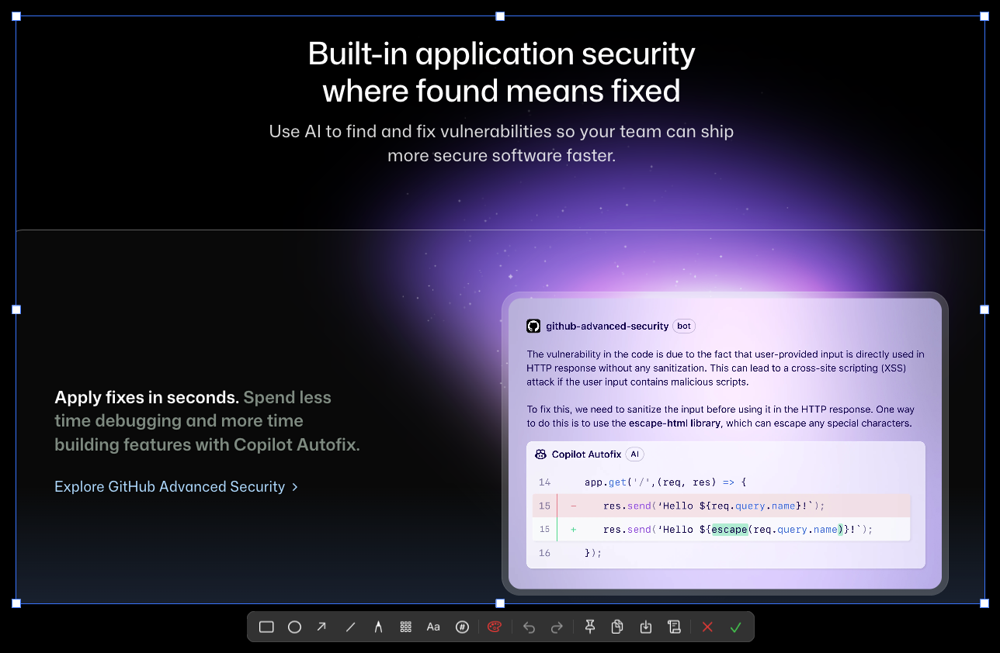

常驻菜单栏的 macOS 截图工具。区域、窗口、全屏、滚动长截图，配合强大的标注编辑器，每一次捕捉都行云流水。
v0.1.0 · 原生 Swift · 基于 ScreenCaptureKit · 支持 macOS 14 及以上

从随手一截到整页长图，SnapFlow 都能优雅拿下。
拖拽框选任意区域，实时显示尺寸与放大镜，像素级精准。
自动识别屏幕窗口，悬停高亮，一键捕捉带阴影的独立窗口。
多显示器支持，一键捕捉整块屏幕，快速留存全貌。
自动滚动并智能拼接，把超出屏幕的内容合成为一张完整长图。
将截图钉在屏幕最上层，随时对照参考，不被其他窗口遮挡。
安静待在菜单栏，无 Dock 图标、不打扰工作流，随叫随到。
非破坏性标注，随时调整、撤销与重排，截图完成即可圈重点。
免费下载，安装即用。首次运行请在「系统设置 → 隐私与安全性 → 屏幕录制」中授权。
要求 macOS 14 Sonoma 及以上 · Apple Silicon 与 Intel 均支持
 SnapFlow
SnapFlow